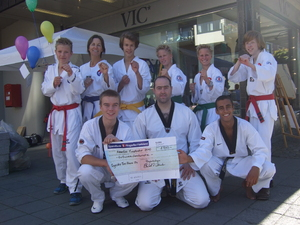

Innlegg
Full klaff på Ringeriksdagen

Og Ringerike TKD gikk av med seiren for "beste stand fo lag og foreninger"!
Lørdag 4. september var det et arrangement i byen, kalt "Ringeriksdagen" hvor Ringerike skulle vise hva det hadde å by på. Det var tjukt med folk i hele sentrum og det ble satt ny rekord med antall "stander" i år. Over 160 lag, foreninger, bedrifter, skoler, interesseorganisjoner og mye mer viste seg frem. Første gang i år, bestemte vi oss for også å være med på sirkuset.
TKD-klubben fikk plassering rett utenfor kinoen og VIC-Tronrud og delte matter med Judo-klubben. Vi hadde kjøpt inn party-telt, ballonger og heliumgass, og delte ut "flyers" og brosjyrer til alle som var i nærheten. Vi kjørte også oppvisning tre ganger hvor det var med alt fra grunnteknikk og poomse, til selvforsvar og knusesekvenser.
Det var ikke før siste oppvisning var gjennomført, og vi var klare til å pakke ned at vi fikk vite om at vi hadde vunnet en pris for best stand. Vi visste vel ikke engang at det var noen konkurranse i det hele tatt, så det var overraskende. Premien var på KR 2 500, som kommer godt med i en klubb som hele tiden streber etter å kunne tilby et best mulig treningstilbud.
Juriens begrunnelse for hvorfor det akkurat var vi som skulle gå av med seieren var blant annet at det var godt organisert, underholdende å se på, gode markedsføringstaktikker og en høy dispiplin. Dette setter vi stor pris på!